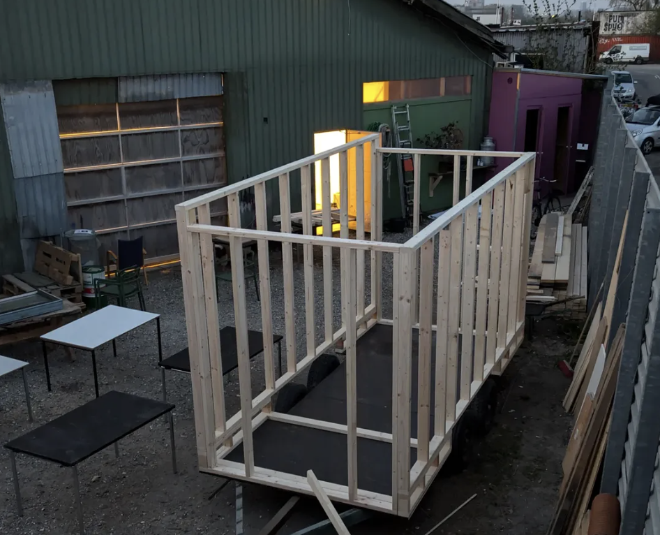
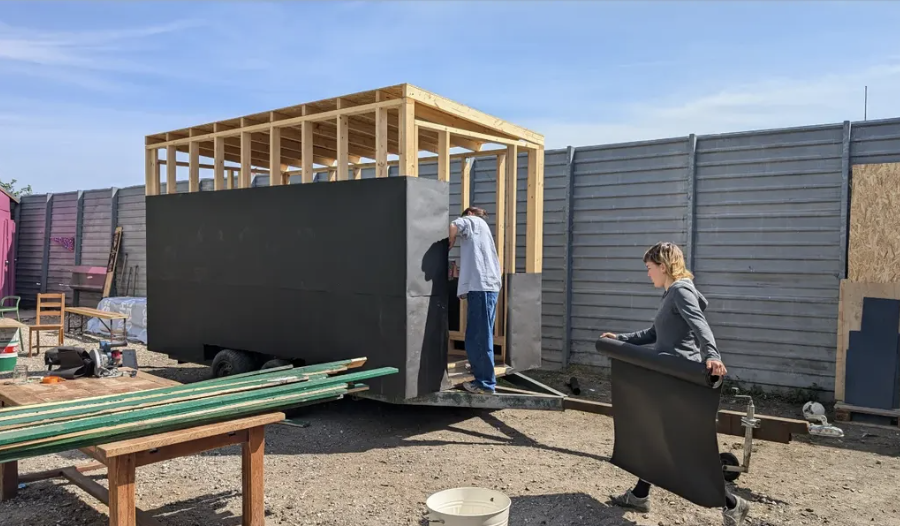
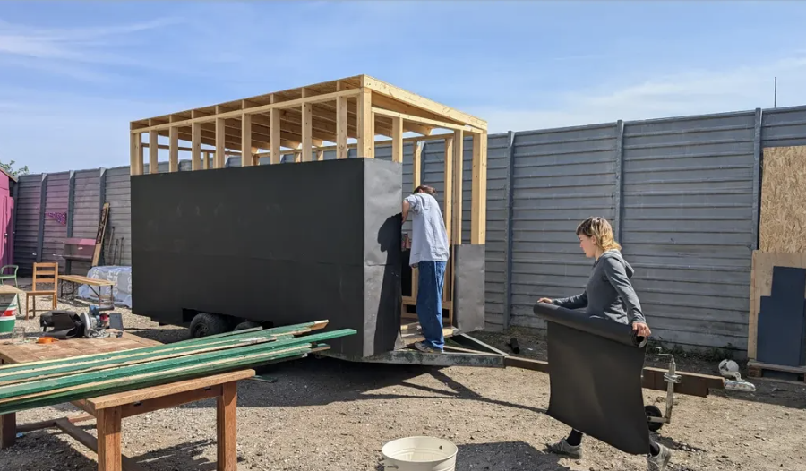

MOBILE SAUNA
2024 – I designed and built this electric sauna on a trailer, creating a fully mobile structure that accommodates about 15 people. Alongside the sauna, I constructed a deck and a cold plunge to complete the experience. Unlike the floating, wood-fired sauna, this project emphasized portability and accessibility, allowing it to be transported and used in different settings. It expanded my experience with adaptable design-build work and introduced me to working with electric heating systems at scale.


 
